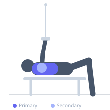

Exercise guide / Flat Cable Bench Flye
Flat Cable Bench Flye
The flat cable bench flye uses a flat bench positioned between two low cable pulleys to deliver constant tension throughout the chest fly arc. Unlike dumbbells that lose tension at peak contraction, cables maintain resistance from stretch to squeeze, making this an effective hypertrophy exercise.
Primary muscles
pectoralis major sternal
pectoralis major clavicular
Secondary muscles
deltoid anterior
Stabilizers
pectoralis minor
triceps long head
Equipment
Cable Machine (Dual Pulley / Functional Trainer)
Flat Bench
Optional
Adjustable Bench (Incline / Decline)


Starting position
- Place a flat bench in the center of a dual cable machine. Set both pulleys to their lowest position. Lie on the bench and hold one D-handle in each hand, arms extended upward with palms facing each other.
Setup
- Attach D-handles to the low cable pulleys on each side. Set the bench horizontally in the center so both cables run at equal angles.
Steps
- Step 1: Lie flat on the bench, holding both handles with arms extended and a slight elbow bend.
- Step 2: Lower both arms out to the sides in a wide arc, allowing a full stretch across the chest.
- Step 3: Drive both handles upward and together, squeezing the chest as the hands meet above the sternum.
- Step 4: Slowly reverse the motion back to the starting position with control.
- Step 5: Maintain a consistent elbow angle throughout the arc.
Coaching cues
- Keep elbows slightly bent like you're hugging a barrel
- Squeeze hard at the top
- Feel the stretch in the chest at the bottom
Breathing
- Exhale as you bring the cables together. Inhale as you lower the arms out to the sides.
Range of motion
- Lower until a comfortable chest stretch is felt. Bring hands together at the top without touching; focus on squeezing the chest rather than completing hand contact.
Tempo
- 2-1-3-0
Common mistakes
- Bending elbows too much, turning it into a press
- Letting the arms drop too fast on the descent
- Arching the lower back excessively
Safety
- Keep the shoulder blades retracted and down on the bench
- Do not go lower than a comfortable shoulder stretch
- Use a weight that allows full range of motion
Training
- hypertrophy: 10–15 reps
- endurance: 15–20 reps
- hypertrophy: 3–4 sets
- Rest: {'hypertrophy': 60, 'endurance': 45}